For many internships the degree you are studying does not matter as long as it falls under a STEM discipline
Data Science is a broad field
You can apply to Software Engineering internships if they have a statistical responsibility
Be interpersonal and interested
Start with your interests, then go to job boards
It is hard to fake interest in a field unless you are an actor
Ask questions about the job and show you are happy to learn
My Personal Advice1 for Internships
Don’ts
Do not apply on job board websites if possible
Go to the company website directly to apply
Do not be upset by rejection
You do not need an internship to be successful in your career or this program
The current job market is volatile
If you fail an interview, ask questions anyways
Do not do an unpaid internship
Your time is valuable
It is questionable what level of responsibility or commitment they will give you if they will not pay you
Do paid summer research instead (look early!)
Types of Interships
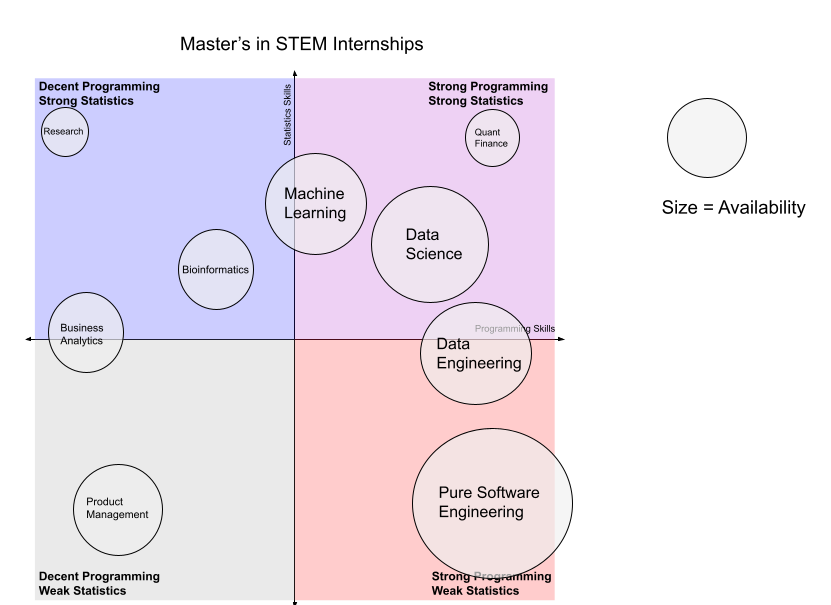
Some Example Listings
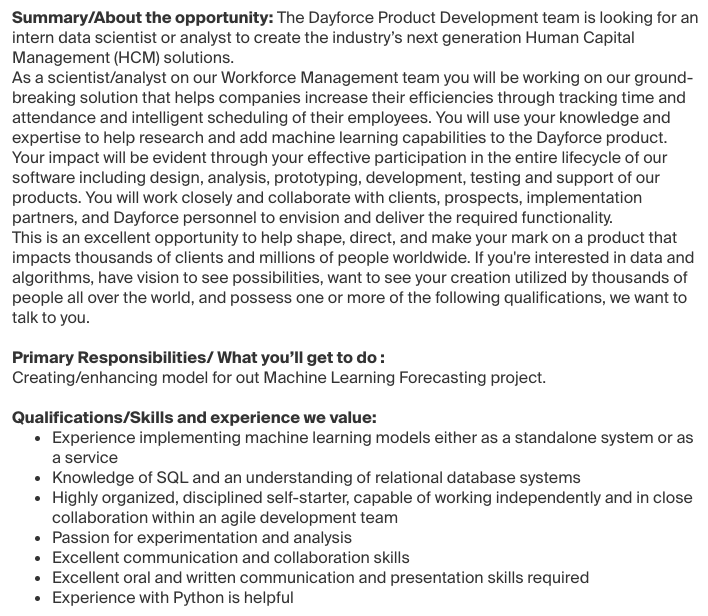
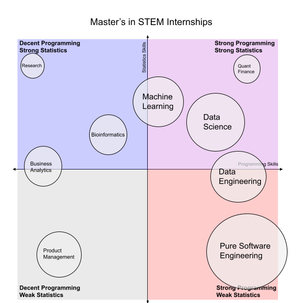
Some Example Listings
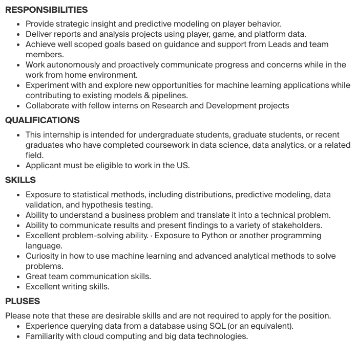
Some Example Listings
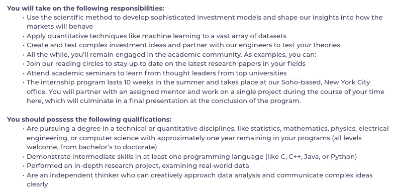
Some Example Listings
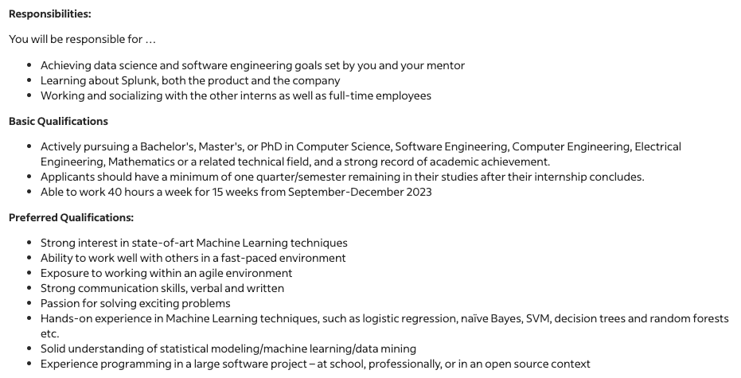
Some Example Listings
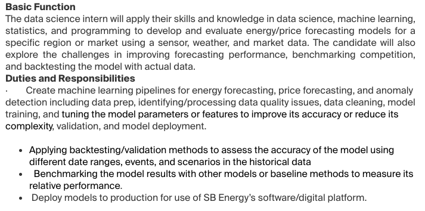
Some Example Listings
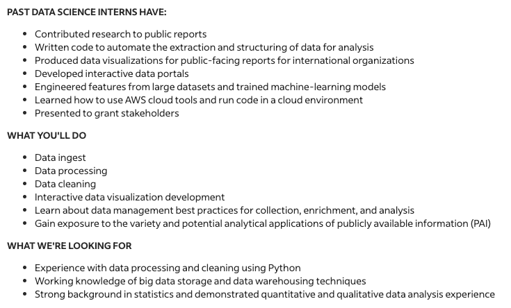
Some Example Listings
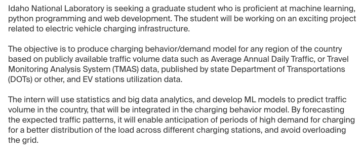
Some Example Listings
Some Example Listings
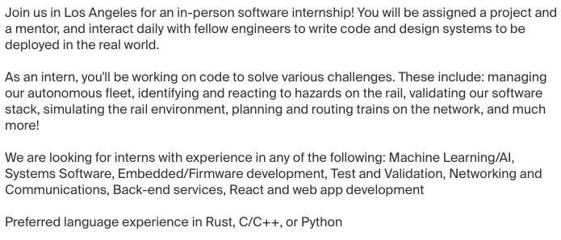
Some Example Listings
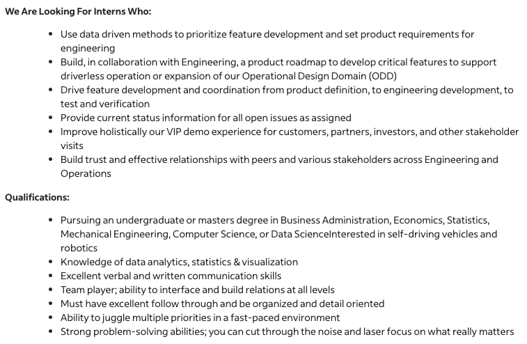
The Process
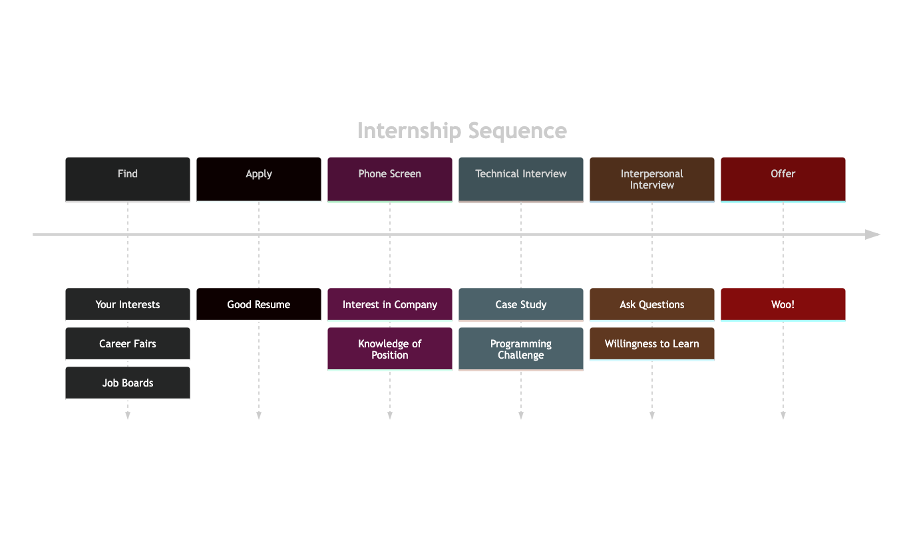
Case Studies
If an internship will have a heavy statistics, machine learning, or creativity component, your technical interview may be a case study.
A case study is a very open ended scenario with a specific goal in mind.
It is important to ask questions about clarifications and assumptions for the problem
You should be clear but critical of your own solution
We will do a couple examples here but will not go too in depth because…
You will learn more about the necessary technical details in your courses
We are here to focus on Python
Example Case Study 1
An online retailer has about 10 million products in their catalog. However, they estimate about 10 percent of these are duplicate listings that they would like to remove. How would you do this?
Questions / Assumptions
What are the features of each product? Are they always accurate?
What counts as different? What if there are two identical products except for color?
What are the consequences for failing to find a duplicate? What about if we falsely assign a duplicate?
Some ideas
Using a clustering method to split the data into a clusters for examination
Building a binary classifier that detects if two items are similar
Add a report button to products, reward users for finding a duplicate
Example Case Study 2
A fast food restaurant wants to determine which factors lead to the longest wait times. You have access to a years worth of high quality camera footage in their restaurant from many angles. How would you solve this problem?
Questions / Assumptions
Is the company willing to pay for a machine learning model to detect people in pictures?
What factors are they talking about? Weather? Time of day? Number of workers?
Some ideas
Finding a good camera angle of the line and using median pixel filtering to find people
Building a computer vision model to track people
Bonus: They also want to determine which factors make it more likely for a customer to leave the line and not come back.
Coding Challenges
If your internship has a heavy focus on programming or engineering, you may have a programming challenge to show an ability to either think under pressure, or write a simple program.
Unlike case studies there are usually 1 or 2 best answers.
An answer can be correct but too slow to be accepted.
How fast your program runs is an important consideration. This is described with big \(O\) notation.
Algorithms and data structures are the basis of these problems. You do not need to know everything about them, but the more you know the likelier you are to pass.
We will focus on these to also help learn Python today.
Big \(O\) Notation
If \(f(x) = O(g(x))\) then \[\lim_{x\to\infty} \frac{f(x)}{g(x)} < \infty\]
If \(f(x) = \Omega(g(x))\) then \[\lim_{x\to\infty} \frac{f(x)}{g(x)} > 0\]
If \(f(x) = O(g(x))\) and \(f(x) = \Omega(g(x))\) then \(f(x) = \Theta(g(x))\)
\[x \log(x^3) = \Theta(x\log x), \\ x \log x = \Omega(\log x)\]
\(O(x^2)\)
Quadratic
\[x^2 + 1000x = \Theta(x^2)\]
\(O(2^x)\)
Exponential
\[x^{1000} = O(2^x), \\ 2^x = O(n!)\]
Examples for Basic Programs
What is the runtime and space complexity to find the sum of a list of integers of length \(n\)?
What is the runtime and space complexity to find all the cumulative sums of a list of integers of length \(n\)?
What is the runtime and space complexity to find the count of occurrences of each number in a list of length \(n\)?
What is the runtime and space complexity to determine if a word is in the English dictionary?
Examples with Some Code 1
def mystery(nums): more_nums = [] count =0for num in nums:for other_num in nums:if num * other_num in more_nums: count +=1else: more_nums.append(num * other_num)return more_nums
Examples with Some Code 2
def mystery(nums): more_nums =set() count =0for num in nums:for other_num in nums:if num * other_num in more_nums: count +=1else: more_nums.append(num * other_num)return more_nums
Examples with Some Code 3
def mystery(number): count =0while number >0: digit = number %10if digit ==1: count +=1 number = number //10return count
Examples with Some Code 4, Think Python Exercise 10.12
Two words “interlock” if taking alternative letters from each forms a new word. For example, “shoe” and “cold” interlock to form “schooled”. Given a list of words, find all pairs of words that interlock. If \(n\) is the number of words and \(k\) is the maximum length of a word, what are the complexities?
# Assume word 1 is the longer of the wordsdef interlock(word1, word2): size_diff =len(word1) -len(word2)if size_diff notin (0, 1):return"" interlocked =""if size_diff >0: interlocked += word1[0] word1 = word1[1:]for letter, index inenumerate(word1, word2): interlocked += letter + word2[index]return interlocked# How does this change if words is a set# instead of a list?def all_interlocks(words): interlocking = []for word1 in words:for word2 in words:if interlock(word1, word2) in words: interlocking.append((word1, word2))return interlocking
Examples with Some Code 4.2, Think Python Exercise 10.12
Two words “interlock” if taking alternative letters from each forms a new word. For example, “shoe” and “cold” interlock to form “schooled”. Given a list of words, find all pairs of words that interlock. If \(n\) is the number of words and \(k\) is the maximum length of a word, what are the complexities?
def deinterlock(word): flip_flop =True first_word ="" second_word =""for letter in word:if flip_flop: first_word += letterelse: second_word += letter flip_flop =not flip_flopreturn first_word, second_worddef all_interlocks(words): as_set =set(words) interlocking = []for word in words: word1, word2 = deinterlock(word)if word1 in as_set and word2 in as_set: inlocking.append((word1, word2))return interlocking
The Python Data Structures1
Data Structures are simply objects that store data. Depending on how data is stored, various operations will take different amounts of time. The most standard operations are:
Access: Given a specific index or key, how long does it take the data structure to return the element stored?
Search: Given a specific element, how long does it take the data structure to determine if that element is present? Variations of search include standard set operations such as union and intersect.
Insert: Given a specific element, how long does it take to add it to the data structure?
Deletion: Given a specific element or index, how long does it take to remove it?
List Experiments (ArrayList)
import timeitimport matplotlib.pyplot as pltTRIALS =2000SIZES =range(100, 2000, 50)my_lists = []for size in SIZES: my_lists.append(list(range(size)))# Can also do (List Comprehension)# my_lists = [list(range(size)) for size in SIZES]
Remember, Dictionaries are just sets that associate the keys with values!
my_dicts = []for size in SIZES:# Even dict comprehensions exist!# Although dictionaries can use integers as keys, for illustration I cast the integers into strings my_dicts.append({str(i): i **2for i inrange(size)})
Dictionary Access
access_times = []for dict_ in my_dicts: access_times.append(timeit.timeit(lambda: dict_["90"], number=TRIALS))
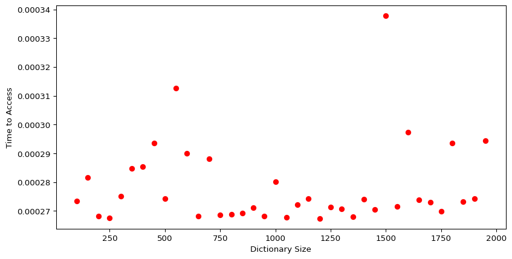
Dictionary Search
search_times = []for dict_ in my_dicts: search_times.append(timeit.timeit(lambda: 1000in dict_, number=TRIALS))
Linked Lists are not native to Python, but they are one of the most basic data structures that you may see often in technical interviews. Try to determine the runtime complexities of the 4 basic operations of a Linked List. Read the code below to get an idea of how they are structured. Hint: Draw a picture.
class Node:def__init__(self, value):self.value = valueself.next_node =Noneclass LinkedList:def__init__(self):self.head =Noneself.tail =Nonedef add_item_at_end(value):ifself.head isNone:self.head = Node(value)self.tail =self.headifself.tail isnotNone: new_node = Node(value)self.tail.next_node = new_nodeself.tail = new_node# ... and so on
More Advanced Data Structures:
Graphs: General data structure describing nodes and edges. Entire classes can be taken on these.
Trees: Graphs that have no cycles and a parent/child structure.
Binary Search Trees: Trees which have the elements sorted to quickly check if they are present.
Heaps: A type of tree for getting the maximum element quickly.
KD Trees: Generalization of Binary Search Trees to multiple dimensions. Incredibly useful in Data Science and Computer Graphics.
And many more… (I have personally only directly used the ones previously listed)
The DNA sequence is composed of a series of nucleotides abbreviated as 'A', 'C', 'G', and 'T'.
For example, "ACGAATTCCG" is a DNA sequence. When studying DNA, it is useful to identify repeated sequences within the DNA.
Given a string s that represents a DNA sequence, return all the 10-letter-long sequences (substrings) that occur more than once in a DNA molecule. You may return the answer in any order.
Example 1:
Input: s = "AAAAACCCCCAAAAACCCCCCAAAAAGGGTTT"
Output: ["AAAAACCCCC","CCCCCAAAAA"]
Example 2:
Input: s = "AAAAAAAAAAAAA"
Output: ["AAAAAAAAAA"]
Given two integer arrays nums1 and nums2, return an array of their intersection. Each element in the result must be unique and you may return the result in any order.
Given two integer arrays nums1 and nums2, return an array of their intersection. Each element in the result must appear as many times as it shows in both arrays and you may return the result in any order.
Input: nums1 = [4,9,5], nums2 = [9,4,9,8,4]
Output: [4,9]
Explanation: [9,4] is also accepted.
Studying on Your Own
In summary: Pick a field/discipline you are most interested in, find some listings that talk about qualifications, and study relevant resources for passing the interviews. If you want to focus on it now, you can, but certainly do not have to. You can do an internship after your 2nd year!
Get GOOD at Python
This will be most valuable to you outside of a job search, and you usually cannot pass technical interviews if you do not know how to write the code (even if you know the solution).
Deliberately write the best code you can on your assignments, even if its not in Python
Experiment with code from class
Learn well and progress in the master’s program.
You will be far better off by doing well in your classes and learning the material well, than doing lots of internship prep and doing poorly in your courses.
There are also algorithms and data structures courses here